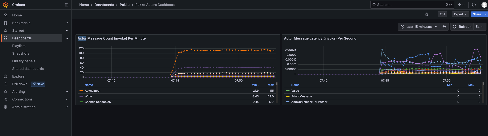

Monitoring

This guide demonstrates how to set up and use the built-in monitoring capabilities of Spring Boot Starter Actor to observe and analyze your actor system's performance.
Overview
The monitoring example shows how to:
- Set up a complete monitoring stack with Prometheus and Grafana
- Collect and export metrics from your actor system
- Visualize actor performance metrics in real-time
- Track message processing times and throughput
- Monitor cluster health and resource usage
This example provides insights into how Spring Boot Starter Actor can be used to observe and optimize your application's performance without complex configuration.
Complete Monitoring Stack
The example includes a pre-configured Prometheus + Grafana stack ready to use with Docker Compose.
Key Components
Metrics Module
The Metrics module provides instrumentation for Pekko actors to collect performance metrics. It uses a Java agent to intercept method calls and capture timing information.
# Include the Java agent when starting your application
java -javaagent:metrics-{version}-agent.jar -jar your-application.jar
Java Agent Required
The metrics module requires running with the Java agent to collect actor performance metrics.
ActorInstrumentationEventListener
The ActorInstrumentationEventListener allows you to capture metrics about actor message processing:
// Register a listener for actor messages
ActorInstrumentationEventListener.register(new InvokeAdviceEventListener() {
@Override
public void onEnter(Envelope envelope) {
// Called when a message is about to be processed
}
@Override
public void onExit(Envelope envelope, long startTime, Throwable throwable) {
// Called when message processing is complete
// Calculate duration: System.nanoTime() - startTime
}
});
Metrics Exporter
The ActorClusterMetricsExporter shows how to export metrics to Prometheus via Micrometer:
@Component
public class ActorClusterMetricsExporter {
private final MeterRegistry registry;
private final ConcurrentHashMap<String, Timer> invokeTimers = new ConcurrentHashMap<>();
private final ConcurrentHashMap<String, Counter> invokeCounters = new ConcurrentHashMap<>();
// Define which message types to track
private final Set<Class<?>> targetClasses = Set.of(
ChatRoomActor.JoinRoom.class,
ChatRoomActor.LeaveRoom.class,
ChatRoomActor.SendMessage.class
);
public ActorClusterMetricsExporter(MeterRegistry registry) {
this.registry = registry;
}
@PostConstruct
public void registerMetrics() {
ActorInstrumentationEventListener.register(new InvokeAdviceEventListener() {
@Override
public void onEnter(Envelope envelope) {}
@Override
public void onExit(Envelope envelope, long startTime, Throwable throwable) {
if (!targetClasses.contains(envelope.message().getClass())) {
return;
}
String messageType = envelope.message().getClass().getSimpleName();
// Record timing metrics
Timer timer = invokeTimers.computeIfAbsent(messageType, mt ->
Timer.builder("pekko.actorcell.invoke.timer")
.description("Time spent processing messages")
.tags("messageType", mt)
.register(registry)
);
// Record count metrics
Counter counter = invokeCounters.computeIfAbsent(messageType, mt ->
Counter.builder("pekko.actorcell.invoke.count")
.description("Count of messages processed")
.tags("messageType", mt)
.register(registry)
);
long duration = System.nanoTime() - startTime;
timer.record(duration, TimeUnit.NANOSECONDS);
counter.increment();
}
});
}
}
Setting Up the Monitoring Stack
Spring Boot Starter Actor includes a ready-to-use monitoring stack with Prometheus and Grafana, managed via Docker Compose.
1. Start the Monitoring Stack
Navigate to the monitoring directory and start the stack:
This will start:
- Prometheus at
http://localhost:9090 - Grafana at
http://localhost:3000
Default Credentials
Grafana default credentials are admin/admin. You'll be prompted to change the password on first login.
2. Configure Your Application
Ensure your application exposes metrics via Spring Boot Actuator:
# application.yaml
management:
endpoints:
web:
exposure:
include: health,info,prometheus
metrics:
export:
prometheus:
enabled: true
3. Access the Dashboards
Open Grafana at http://localhost:3000 (default credentials: admin/admin) to view the pre-configured dashboards.
Pre-Configured Dashboards
The monitoring stack includes pre-built dashboards for actor metrics, showing message processing times, throughput, and more.
4. Shutdown When Done
Data Persistence
Using -v flag removes volumes, which deletes all metrics data. Omit -v if you want to preserve data between restarts.
Summary
- Collect performance data with the metrics module and Java agent
- Visualize with Prometheus and Grafana using pre-configured dashboards
- Monitor actor performance including message processing times and throughput
- Track cluster health and resource usage across all nodes
Production Monitoring
This monitoring setup is production-ready and can be adapted to your specific infrastructure needs.
Next Steps
- Chat Example - See monitoring in action with a real application
- Cluster Example - Monitor distributed actor systems
- Logging Guide - Add MDC logging for better observability